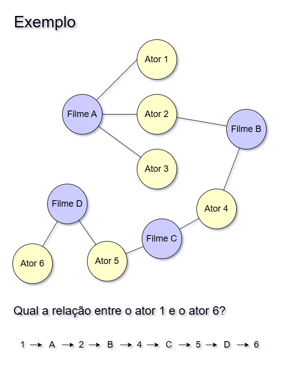

24/11/2024
 Exemplo uma saída do programa
Exemplo uma saída do programaPor João Felipe Ribeiro
24/11/2024
Exemplo uma saída do programa
Os "Seis Graus de Kevin Bacon" são um conceito inspirado pela teoria dos "seis graus de separação", que sugere que qualquer pessoa no mundo está conectada a qualquer outra por, no máximo, seis intermediários. Adaptado para o mundo do cinema, o jogo propõe que qualquer ator pode ser ligado a Kevin Bacon através de, no máximo, seis conexões baseadas em filmes em que atuaram juntos. Por exemplo, se o ator A trabalhou com o ator B em um filme, e B trabalhou com Kevin Bacon, então A tem um "número de Bacon" de 2. A ideia tornou-se um fenômeno cultural, enfatizando como as redes de colaboração no cinema (e na sociedade) são interconectadas.
Na implementação da ideia as relações entre os atores pode ser descrita como um grafo não direcionado. A estrutura de dados interliga os atores ao seus filmes e outros atores, permitindo que um caminho seja traçado entre eles.
 Grafo não direcionado que interliga os filmes e os atores
Para realizar a busca do caminho entre os atores, utiliza-se um algoritmo guloso para encontrar o primeiro melhor e mais curto caminho entre eles.
Para isso, é necessário utilizar uma variação do Breadth First Search, um algoritmo de pesquisa em largura para grafos. Nessa variação, é criado uma queue (fila) com todos os caminhos que foram percorridos. Se o caminho achado não for o caminho final entre os atores, a fila anda e um próximo caminho é analisado. Portanto o algoritmo é guloso pois ele sempre vai achar o primeiro caminho e o de menor tamanho (que é melhor para o caso).
Pseudo-código para o algoritmo utilizado:
Função BFS(grafo, ator_inicial, ator_final):
Se ator_final não estiver no grafo:
Lançar erro: "Esse ator não existe na base de dados"
Fila <- []
Inserir [ator_inicial] na Fila
Enquanto a Fila não estiver vazia:
Caminho <- Remover o primeiro elemento da Fila
Nodo <- Último elemento do Caminho
Se Nodo for igual a ator_final:
Retornar Caminho
Para cada adjacente em grafo[Nodo]:
Novo_Caminho <- Copiar Caminho
Adicionar adjacente ao Novo_Caminho
Inserir Novo_Caminho na Fila
Retornar Nulo
Para implementar a utilização do banco de dados do TMDB, foi utilizado um arquivo csv contendo todos os dados dos filmes. Porém nem todos os dados são úteis para o projeto. Os únicos dados relevantes são os nomes dos filmes e dos atores. Portanto foi realizado uma filtragem para que fosse gerado um dicionário apenas com esses dados.
A primeira etapa para construir o grafo é gerar um dicionário contendo uma relação filme:atores para cada item.
Percebe-se que a partir disso, temos um grafo direcionado. Ou seja, só existe a direção filmes para atores.
Em seguida, precisamos realizar a conversão desse grafo direcionado para um grafo indirecionado. Ou seja, precisamos de um grafo em que os filmes apontem para os atores, mas que os atores também apontem para os filmes.
Enfim, teremos um grafo não direcionado.
Para escrever frases como "Chris Evans trabalhou em Street Kings junto com Keanu Reeves" foi criado um simples algoritmo que alterna entre conectivos para a frase de acordo com o índice do elemento do caminho do grafo.